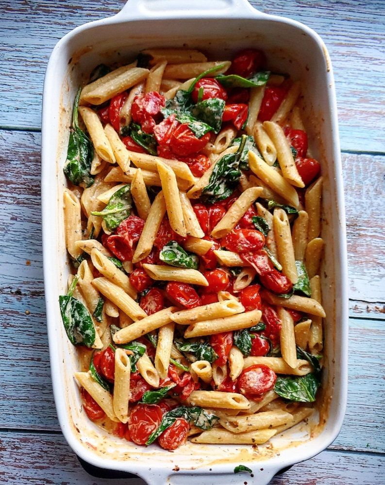

Baked Goat Cheese Pasta

Tik-Tok Viral Worthy Pasta
A few months back, it seemed that al I saw over foodie social media was that baked feta pasta from Tik Tok.
Basically, people doused tomatoes in olive oil, spread them out in a baking dish, and placed a black of feta in the middle. Baked in the oven, the tomato juices and cheese mixed together for a decadent-looking pasta sauce.
I love the idea of the recipe. Simple, clean, and tasty. But I love the creaminess and saltiness of goat cheese, and found that you can use less of it than feta and still get a nicely balanced sauce.
No need for all of that olive oil, either. Most recipe I saw called for around 1/2 cup of olive oil. One tablespoon was just enough to provide some flavor and help with caramelizing the tomatoes.
INGREDIENTS
- 24 ounces grape tomatoes*
- 1 tbsp extra virgin olive oil
- 1/2 tsp dried basil
- 1/2 tsp dried oregano
- 1/2 tsp kosher salt
- 1/4 tsp freshly ground black pepper
- 1/4 tsp red pepper flakes (optional)
- 5 ounce log of herbed goat cheese
- 8 ounces dried short, whole wheat pasta (I used penne)
- 1/2 cup reserved pasta cooking water
- 2 cloves garlic, finely minced
- 2-3 cup baby spinach leaves
STEPS
- Preheat oven to 425F. In a larger baking dish, toss tomatoes with olive oil, basil, oregano, salt, pepper, and paper flakes.
- Spread tomatoes into an even layer in the dish, leaving a small space in the center for the goat cheese. Add goat cheese and bake, uncovered, for 20 minutes.
- While the dish is baking, boil your pasta in salted water according to package directions. I add about 1 tbsp salt to my boiling water.
- Before you drain the pasta, reserve 1/2 cup of the cooking water and set aside.
- Remove dish from oven. Add in garlic and spinach. Drizzle about 1/4 cup of the pasta water over the spinach and toss all ingredients together until spinach begins to wilt, cheese melts in the tomatoes, and a thick sauce forms.
- Toss in cooked and drained pasta. Add in more pasta water as needed to thin the sauce. Serve.